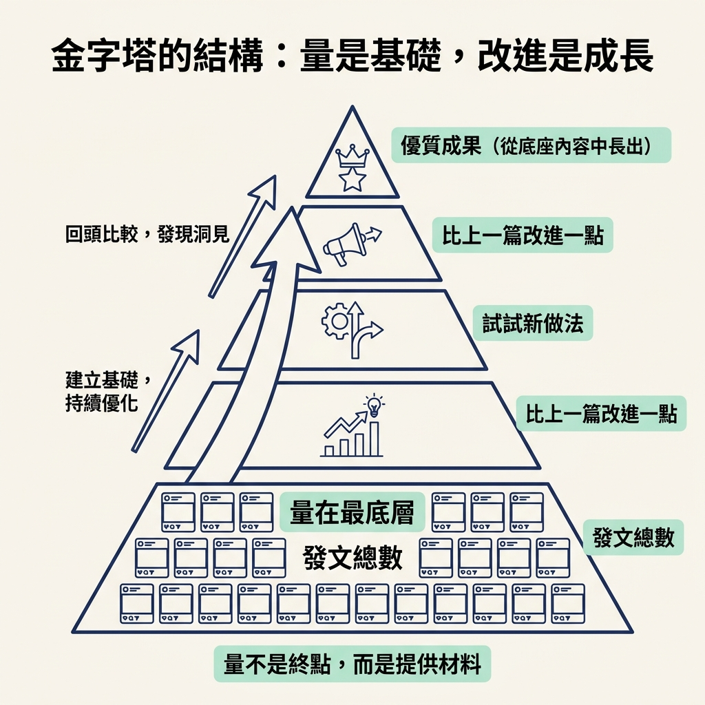
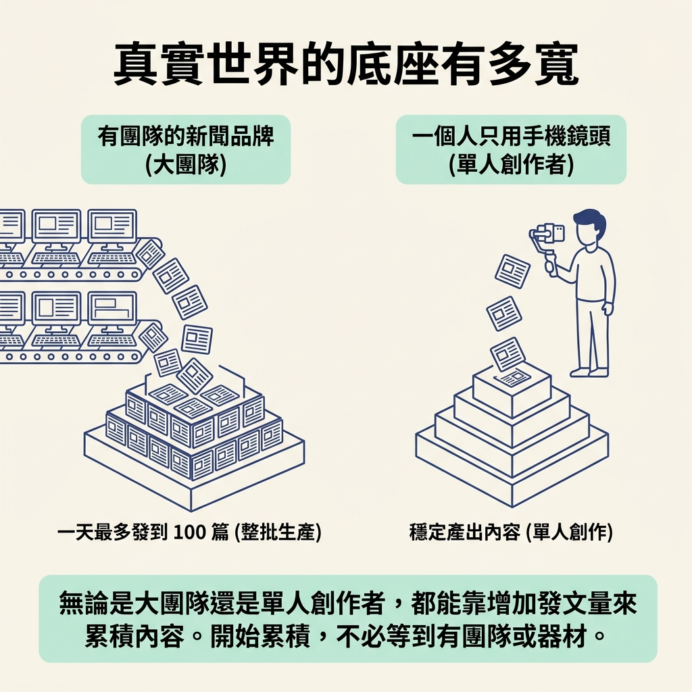

你會用 Content Pyramid 說明「量是底座，每一篇都是改進或嘗試新做法的機會」，也會理解持續發文為什麼能帶動迭代。
上一節已經把方向定下來：剛起步時，能發多少就盡量發。但如果只記得「多發」，難免會想：一直埋頭發，和亂槍打鳥到底差在哪裡？
這一節接著上一節的方向，談怎麼讓持續發文有所累積。課程用 Content Pyramid（內容金字塔）來解釋：量和品質不是二選一，發得多可以成為逐步改進的基礎。它要回答的問題是，為什麼「先衝量」不等於不在意成品。
Content Pyramid 的結構很簡單：量是金字塔的底座；底座上每一篇貼文，都是一次「比上一篇改進一點」或「試試新做法」的機會。
先看底座：它就是你發出去的貼文總數。底座越寬，能拿來比較和改進的內容就越多。這也說明了為什麼起步時要先衝量：量不是終點，而是提供材料，讓你有機會一層層往上累積。
有了一批貼文之後，你才有東西可以回頭比較：哪種開頭比較多人看完？哪個題目讓觀眾反應比較好？哪一天發文的效果比較好？這些問題都要建立在你已經發過一些內容的基礎上。金字塔上層的改進，正是從底座的內容中慢慢長出來的。

所以，這個模型不是「先求量，品質以後再說」，而是「用前一篇累積的經驗，讓下一篇進步一點」。量是原料，品質則是在持續製作與比較中逐步改善的。
課程用一句話說明這個機制：量會逼你去迭代（volume forces you to iterate）。當你持續產出，就得想辦法讓下一篇接得上。你會開始整理哪些做法比較順，也會思考這次要不要換個方式。持續交出新內容的要求，會推著你不斷調整。
所以課程特別鼓勵起步階段做比較大的改變，例如換一個新頻道，或改用另一種格式。這時底座還小，嘗試不同方向比較容易；等到追蹤數增加、觀眾對你有固定期待後，大幅改變可能就會受到更多限制。早期能嘗試的空間也比較大。
課程列出幾個例子，讓你看看不同規模的創作者，如何累積內容數量。
| 例子 | 規模 | 它的底座長什麼樣 |
|---|---|---|
| Instant Bollywood（Instagram） | 帶團隊的新聞品牌 | 一天最多發到 100 篇 |
| Sabrina Ramonov（Instagram） | 一個人 | 只用手機鏡頭，分享她覺得有用的內容 |
| 講師早期的 TikTok | 一個人 | 一天發三支短片，親手剪、親手發 |
| 講師那支早期爆紅的 TikTok | 一個人 | 那一支讓他確定自己抓對了方向 |
這些例子不是要你一天發到 100 篇，而是要說明：無論是大團隊還是單人創作者，都能靠增加發文量來累積內容。有團隊可以一天發上百篇；一個人只用手機，也能穩定產出。開始累積，不必等到有團隊或器材才做得到。

再看最後一列：講師提到，早期那支爆紅的影片讓他發現自己抓對了方向。但事前無法知道哪一支會中。能做的是持續增加內容，讓找到合適方向的機會出現，而不是停在原地等那支影片自己冒出來。
Content Pyramid 把量和品質連在一起：量是底座，每一篇貼文都是改進或嘗試新做法的機會。底座累積得越多，越有內容可以比較和調整；持續產出也會推著你迭代。早期可以大膽嘗試不同頻道或格式，而大團隊和一人創作者都能用自己的方式累積內容。哪一篇會找到對的方向，往往要發了一些之後才看得出來。
這一節的結果，是你能用 Content Pyramid 說明量如何成為改進的基礎。接下來，你打算發很多篇的時候，也許會想直接把流程自動化、一次排好一大批。下一節就會談這個選擇：起步時，該親手做，還是先交給工具。